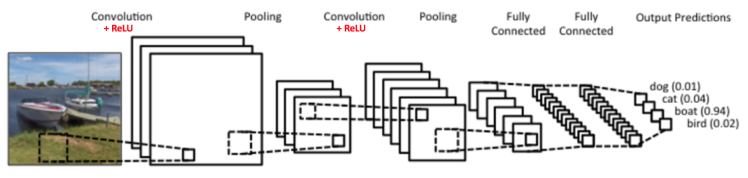
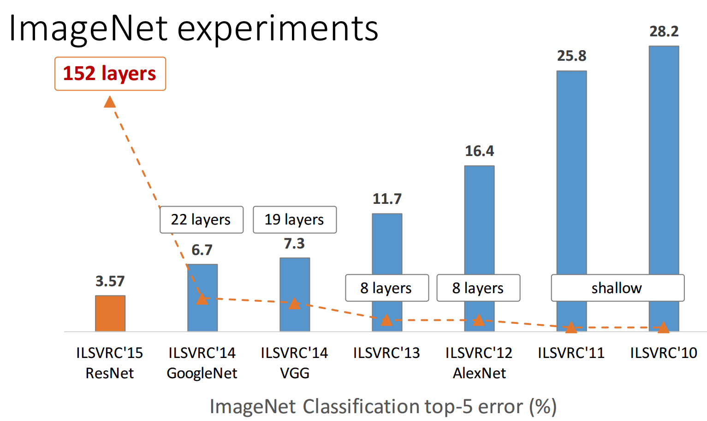

class: center, middle # Introduction au Deep Learning ## Réseaux de Neurones Convolutionnels ### Evann Courdier 18 juin 2019 .affiliations[   ] --- # Plan de la journée ### En théorie... - .grey[Introduction: Deep Learning - Pourquoi et où ?] - .grey[Réseau de neurones: Description et entraînements] - Vision: Introduction aux réseaux neuronnaux convolutionnels - .grey[Le deep learning : limites et éthique] ### .grey[En pratique...] - .grey[Implementation de word2vec en PyTorch] - .grey[Utilisation d'un CNN pré-entrainé] --- ## Pourquoi des CNN ? ### Nombre de paramètres Si on utilisait une image en entrée d'un réseau classique, il faudrait apprendre un nombre colossal de paramètres ! Par exemple, une couche d'un réseau qui prend en entrée une image RGB $256 \times 256$ image, et produit une image de même taille nécessite: $$ (256 \times 256 \times 3)^2 \simeq 4e+10 $$ paramètres. --- ## Pourquoi des CNN ? ### Cohérence Spatiale Les images posèdent une cohérence spatiale, et donc les systèmes qui utilisent des images doivent être 'invariant par translation'. Un réseau convolutionnel l'est car il applique la même transformation linéaire à chaque endroit de l'image. --- --- ## Convolution 1d .center[ <br/> ] .credit[Slide credit: F. Fleuret] --- ## Convolution 1d .center[ <br/> ] .credit[Slide credit: F. Fleuret] --- ## Convolution 1d .center[ <br/> ] .credit[Slide credit: F. Fleuret] --- ## Convolution 1d .center[ <br/> ] .credit[Slide credit: F. Fleuret] --- ## Convolution 1d .center[ <br/> ] .credit[Slide credit: F. Fleuret] --- ## Convolution 1d .center[ <br/> ] .credit[Slide credit: F. Fleuret] --- ## Convolution 1d .center[ <br/> ] .credit[Slide credit: F. Fleuret] --- ## Convolution 1d .center[ <br/> ] .credit[Slide credit: F. Fleuret] --- ## Convolution 1d .center[ <br/> ] .credit[Slide credit: F. Fleuret] --- ## Convolution d'une image - Image de dimensions $5 \times 5$ - Noyau de dimensions $3 \times 3$ .center[ <img src="images/numerical_no_padding_no_strides.gif" style="width: 80%;" /> ] --- ## Convolution d'une image (Noir & Blanc) .center[ <img src="images/conv2d_BW.gif" style="width: 100%;" /> ] --- ## Convolution d'une image (Couleur) .center[ <img src="images/conv2d_rgb.gif" style="width: 100%;" /> ] --- ## Convolution 2d .center[ <br/> ] .credit[Slide credit: F. Fleuret] --- ## Convolution 2d .center[ <br/> ] .credit[Slide credit: F. Fleuret] --- ## Convolution 2d .center[ <br/> ] .credit[Slide credit: F. Fleuret] --- ## Convolution 2d .center[ <br/> ] .credit[Slide credit: F. Fleuret] --- ## Convolution 2d .center[ <br/> ] .credit[Slide credit: F. Fleuret] --- ## Convolution 2d .center[ <br/> ] .credit[Slide credit: F. Fleuret] --- ## Convolution 2d .center[ <br/> ] .credit[Slide credit: F. Fleuret] --- ## Convolution 2d .center[ <br/> ] .credit[Slide credit: F. Fleuret] --- ## Convolution 2d .center[ <br/> ] .credit[Slide credit: F. Fleuret] --- ## Convolution 2d .center[ <br/> ] .credit[Slide credit: F. Fleuret] --- ## Convolution 2d .center[ <br/> ] .credit[Slide credit: F. Fleuret] --- ## Convolution 2d .center[ <br/> ] .credit[Slide credit: F. Fleuret] --- ## Convolution 2d .center[ <br/> ] .credit[Slide credit: F. Fleuret] --- ## Noyau de Convolution - Ils sont appris (ils font partie des paramètres) - Exemple de filtres "3D" (3 canaux RGB) appris: .center[ <br/> ] --- ## Sous Echantillonnage (Pooling / Subsampling) - Réduction de dimension spatiale - Plusieurs type: average pooling, max pooling, ... .center[ ] --- ## Sous Echantillonnage (Pooling / Subsampling) - Réduction de dimension spatiale - Plusieurs type: average pooling, max pooling, ... .center[ <img src="images/pooling.png" style="width: 600px;" /> ] ??? Conserve l'invariance par translation --- ## Max-Pooling 1d .center[ <br/> ] .credit[Slide credit: F. Fleuret] --- ## Max-Pooling 1d .center[ <br/> ] .credit[Slide credit: F. Fleuret] --- ## Max-Pooling 1d .center[ <br/> ] .credit[Slide credit: F. Fleuret] --- ## Max-Pooling 1d .center[ <br/> ] .credit[Slide credit: F. Fleuret] --- ## Max-Pooling 1d .center[ <br/> ] .credit[Slide credit: F. Fleuret] --- ## Max-Pooling 1d .center[ <br/> ] .credit[Slide credit: F. Fleuret] --- ## Max-Pooling 1d .center[ <br/> ] .credit[Slide credit: F. Fleuret] --- ## Max-Pooling 2d .center[ <br/> ] .credit[Slide credit: F. Fleuret] --- ## Max-Pooling 2d .center[ <br/> ] .credit[Slide credit: F. Fleuret] --- ## Max-Pooling 2d .center[ <br/> ] .credit[Slide credit: F. Fleuret] --- ## Max-Pooling 2d .center[ <br/> ] .credit[Slide credit: F. Fleuret] --- ## Max-Pooling 2d .center[ <br/> ] .credit[Slide credit: F. Fleuret] --- ## Max-Pooling 2d .center[ <br/> ] .credit[Slide credit: F. Fleuret] --- ## Max-Pooling 2d .center[ <br/> ] .credit[Slide credit: F. Fleuret] --- ## Max-Pooling 2d .center[ <br/> ] .credit[Slide credit: F. Fleuret] --- ## Max-Pooling 2d .center[ <br/> ] .credit[Slide credit: F. Fleuret] --- ## Max-Pooling 2d .center[ <br/> ] .credit[Slide credit: F. Fleuret] --- ## Max-Pooling 2d .center[ <br/> ] .credit[Slide credit: F. Fleuret] --- ## Max-Pooling 2d .center[ <br/> ] .credit[Slide credit: F. Fleuret] --- ## Max-Pooling 2d .center[ <br/> ] .credit[Slide credit: F. Fleuret] --- ## Max-Pooling 2d .center[ <img src="images/maxpool2d_14.png" style="width: 600px;" /><br/> ] .credit[Slide credit: F. Fleuret] --- ## Max-Pooling 2d .center[ <img src="images/maxpool2d_15.png" style="width: 600px;" /><br/> ] .credit[Slide credit: F. Fleuret] --- ## Couche convolutionnelle Une couche de réseau convolutionnel est composée d'une convolution, d'une activation et d'un pooling. .center[ <br/> ] --- ## Réseau convolutionnel - Superposition de plusieurs couches convolutionnelles qui extraient les features - Les couches plus profondes calculent des features plus globales, plus invariantes - La dernière couche est une couche de classification (non convolutionnelle) .center[ <br/> ] --- ## D'autres architectures: GoogleNet <br /> <br /> .center[ <br/> ] --- ## D'autres architectures: Resnet .center[ <br/> ] --- ## Comparaison des modèles .center[ <br/> ] --- ## Concours de classification d'images .center[ ###"Deeper is better" <br /> <br/> ] -- .center[[Go to Ethique](ethique.html)]